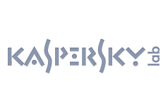
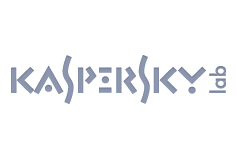

Arrow Media


Who We Are - Our Profile
Our Mission
Arrow Media's aim is to provide a personal and professional service to all our clients, both existing and new. Built upon partnerships that are based upon trust and care, Arrow Media ensures the ultimate professional experience within our field. Continued close collaboration and excellent communication must place the client and their stakeholders at the very heart of everything we do.
The Team
Lead Developer/Owner
Obi-Web Kenobi, has been a force within the industry for the past 14 years. He has not only promoted the Web as a business tool through projects and consultancy but engaged hundreds of Web specialist and skilled them to take the platform to its next level.
With a background in electronics engineering and graphic design, Obi-Web has turned thousands of concepts into desirable, viable and commercially successful solutions.
Obi-Web takes personal interest in each and every project regardless of size or complexity a true Jedi of the on-line universe.
Quality Assurance Manager
Process Leia is our project manager, she ensures that each and every project is fit for purpose and delivers all criteria laid down before being released in to the public domain.

Battle-Hardened Storm Troopers
Galactic talent spread around the universe and galaxies far far away. Our development team ensuring that every need is being met on all our projects. With direction and feedback from their very own Jedi mentor, our team focuses on the job in-hand and delivers.

 
